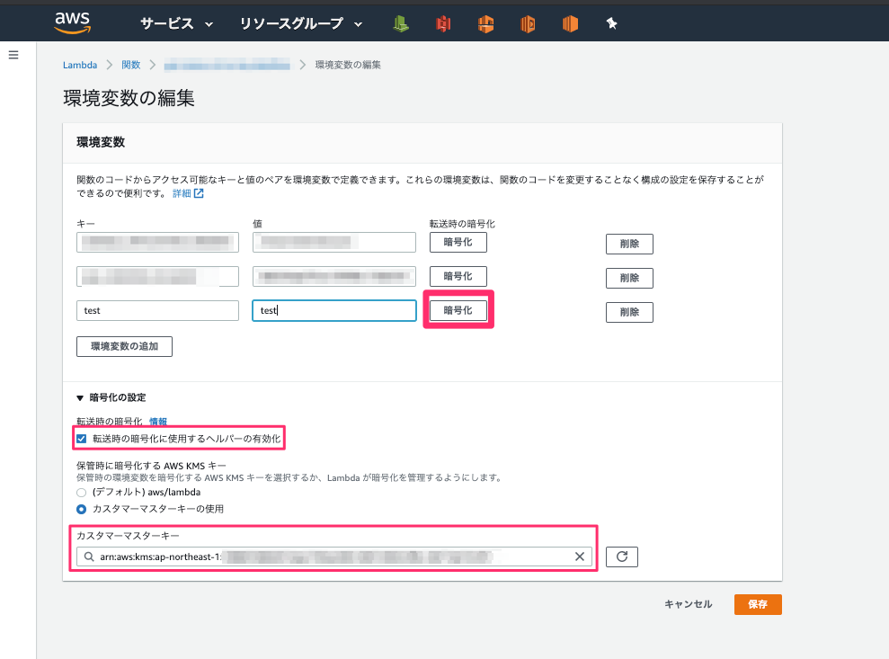
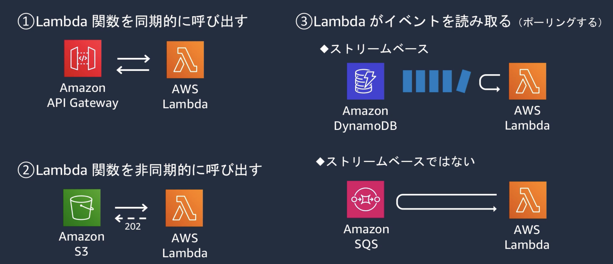
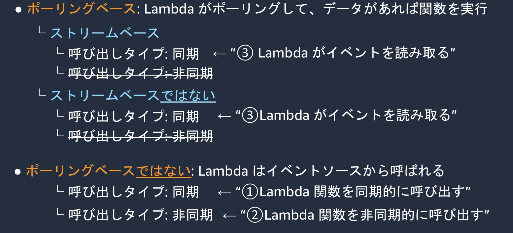
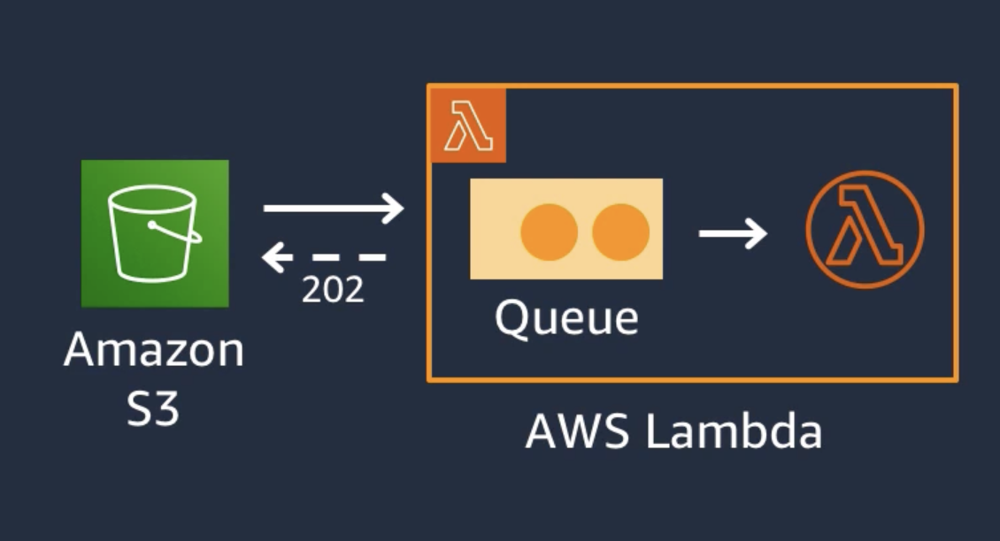
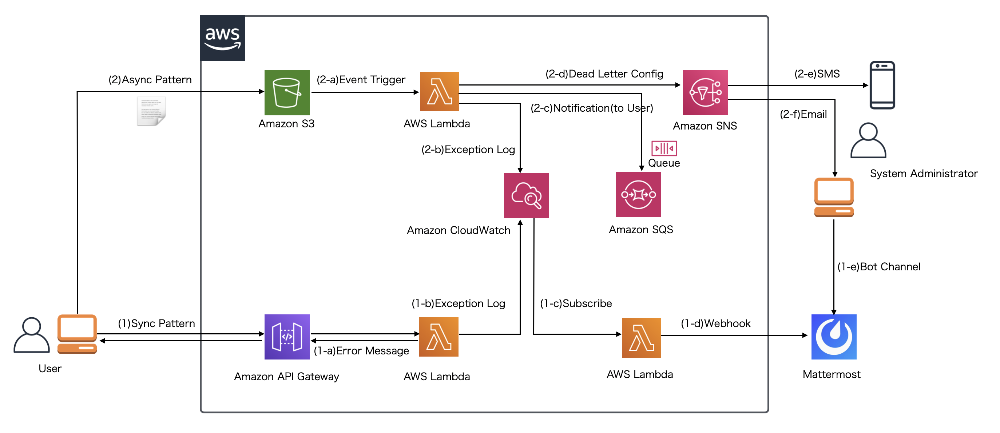
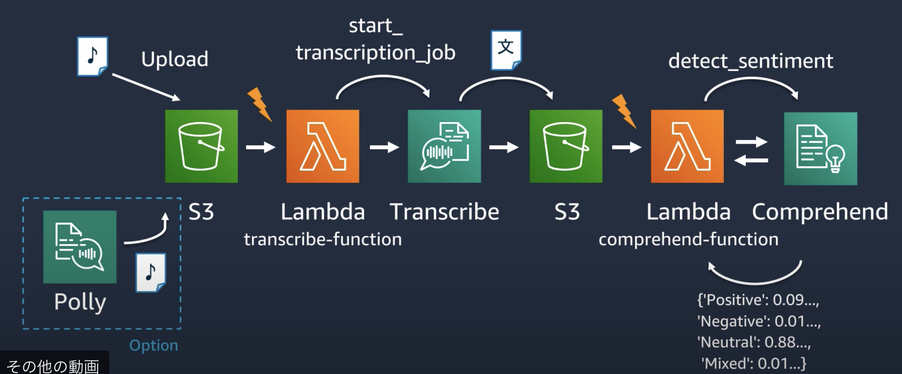
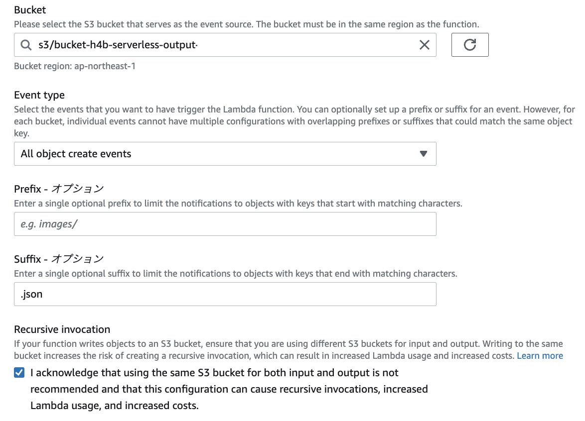

7. Lambda¶
サーバーのプロビジョニングや管理なしでプログラムを実行できるサービス
7.1. Lambdaのメリット¶
コードの実行やスケーリングをLambada側で実施するので、開発者はコーディングに集中できる。
7.2. Lambdaの詳細¶
7.2.1. Lambda関数¶
Lambdaで実行するソースコードとそのソースコードを実行するランタイムを合わせてLambda関数と呼ぶ
7.2.2. 環境設定¶
アプリケーションの実行に必要なライブラリやパッケージをランタイムとして設定する。
CPUは設定することができないが、メモリスペックを設定することができる。
Lambdaでは関数の実行時に使用できるメモリ量は128 MB～10,240 MB の値を 1 MB 単位で設定することができます。
7.2.3. 同時実行数¶
Lambdaのある時点における実行している関数の数を同時実行数と呼ぶ。
同時実行数は以下の式で算出する。
同時実行=（1秒あたりの呼び出し数）x（平均実行時間（秒））
Lambdaはリージョンごとに最大同時実行数が決まっており、これを超える同時実行数を同時に捌きたい場合は別途申請が必要となる。 東京の最大同時実行数は1000であり、Lambdaではリクエストとコンテナ数が1対1となるので、1000以上のリクエストを同時に捌きたい場合は申請が必要となる。
7.2.4. 環境変数¶
Lambdaには環境変数を設定することができる。
環境変数はオプションとして、KMSによる暗号化が準備されており以下の暗号化が可能
保管時の暗号化
伝送時の暗号化

7.2.5. Lambda関数のライフサイクル¶
Lambdaの実態は、EC2(Amazon Linux)かDockerコンテナであり、以下の順序を踏んで実行される
コンテナ作成
デプロイパッケージのロード
デプロイパッケージの展開
ランタイム起動
関数の実行
コンテナの破棄
7.2.5.1. ウォームスタート¶
Lambdaに継続的なリクエストが飛んできている場合、1-4のプロセスはスキップされて、5から処理される。
7.2.5.2. コールドスタート¶
コンテナが不要と判断されると破棄されてしまうので、1番からやり直しとなる。
7.2.5.3. Provisioned Concurrency¶
性能要件が厳しい場合は、事前にプロビジョニングしておくことが可能
7.2.6. バージョン¶
Lambda関数はバージョニング機能があるが、バージョンとして公開されると編集することができない点に注意
7.2.7. エイリアス¶
エイリアスとはLambda関数の別名であり、prd,stg,devなどを設定できる。 エイリアスは同名で２つまで付与することができるので、エイリアスでルーティングをするとカナリアリリースを実現することができる。
7.2.8. Layers¶
複数のLambda関数が共通で利用するライブラリをZIPファイルで切り出して共有する機能 1つのLambda関数から最大5つのLayerを利用することができる。
7.2.9. 一時ファイル¶
Lambdaは512MBの一時ファイルを/tmpとして持つ。
注意が必要なのは、Lambdaが連続で起動している時に、tmpが共有されてしまうこと。
7.2.10. 署名付きURL¶
AWS SDKやCLIを利用することでSTSの機能によって一時的にS3へアクセス可能なURLを発行させることができる。
7.3. Lambdaの呼び出しかた分類¶
Lambdaは呼び出し元のサービスによって、呼び出され方が異なる。

４つの種別については、以下のような分類がある。
 大きな分類手である、ポーリングとはLambdaがイベントを取りに行くのか、呼ばれるのかの分類である。
7.3.1. ①Lambda関数を同期的に呼び出す¶
Lambdaを呼び出したら、その実行が完了するのを待つ。
イベント元に実行結果を返す。
エラー発生時にはエラーがレスポンスされるので、CloudWatch Logsのサブスクリプションフィルタなどを利用する。
※S3のイベント契機をSQSで受け取ってLambdaがポーリングする場合同期処理になる点に注意。
7.3.2. ②Lambda関数を非同期的に呼び出す¶
イベント型のAWSサービスは非同期となる(S3/SNS/CloudWatch Events/EventBridge)
Lambdaを呼び出すと、一旦Lambda内のQueueに格納されてからLambdaが実行される。 イベントソースには、キューへの格納成功だけが返されるので、結果は返されない。
エラー時の挙動はリトライ設定があるが、呼び出し元に通知はいかないので、デッドレターキューなどを利用する。

7.3.3. ③Lambdaがイベントを読み取る(イベントソースマッピング)¶
Lambdaが新しいイベントがないがないかポーリングする。
7.3.4. 呼び出し方に応じたエラーハンドリング¶
同期処理の場合（1-a）
結果をそのままレスポンスに埋め込んで返却するので、CloudWatchに流れていく。 そのため、エラーに応じた通知などはLambdaをもう一つ作成して処理を作り込む必要がある。非同期処理の場合(1-b)
イベントを受け付けると、Lambdaの処理中にエラーが発生しても2回リトライされる。 処理が以上終了しても呼び出し元へ通知はされないがその代わりデッドレターキューをSNSやSQSで定義することができる。この情報を利用して、通知の設定することが可能。

7.4. LambdaとS3・AIなどのAWSサービスの連携¶
7.4.1. H4b¶
H4B：AWS LambdaとAWS AI Servicesを組み合わせて作る音声文字起こし&感情分析パイプライン の内容を踏まえてLambadaの手順などを整理する。
7.4.1.1. 全体構成¶
S3に音声データをアップロードするとS3のイベントが発出され、Lambdaがそれを受け取る。
LambdaがTranscribeを呼び出して、テキストデータに変換し、そのデータをS3にアップロードする。
テキストのアップロードを契機として、再度Lambdaを呼び出して、ポジネガ判定を行う。
Polly:テキストから音声を生成するAIサービス
Transcribe:音声からテキストを生成するAIサービス
comprehend:文章のポジネガ判定を行うAIサービス

7.4.1.2. S3とLambdaの連携¶
S3の手順書に記載 S3バケットの作成をして、Lambdaからpython-get-s3-objectからコードを作成する。
7.4.1.3. LambdaとTranscribeの連携¶
Transcribeの基本的使い方はAIのメモを確認。 S3内部の音声データのObjectを指定すると、文字起こしをして指定したs3のディレクトリにjsonファイルを吐き出す。
LambdaのIAM Roleについて、TranscribeやS3への権限を付与する
transcribeFullAccess
S3FullAccess
Lambdaの関数の中身を変更する。LambdaからAWSを呼び出すときはリファレンスを参考にする
処理の中身はs3からデータを受け取って、Transcribeに連携、Transcribeの保存先にS3を指定
import json
import urllib.parse
import boto3
import datetime # jobuをユニークにするため
# s3のclient作成
s3 = boto3.client('s3')
# transcribeのclient作成
transcribe = boto3.client('transcribe')
def lambda_handler(event, context):
# bucket名取得
bucket = event['Records'][0]['s3']['bucket']['name']
# object名取得
key = urllib.parse.unquote_plus(event['Records'][0]['s3']['object']['key'], encoding='utf-8')
try:
transcribe.start_transcription_job(
# job名をユニークに設定
TranscriptionJobName= datetime.datetime.now().strftime('%Y%m%d%H%M%S') + '_Transcription',
# 日本語を対象に設定
LanguageCode='ja-JP',
Media={
# 入力メディアのパス
'MediaFileUri': 'https://s3.ap-northeast-1.amazon.com/' + bucket + '/' + key
},
# 出力するs3バケットの情報[s3::]は不要
OutputBucketName='bucket-h4b-serverless-output',
# 出力するs3バケット内のディレクトリ
OutputKey = 'transcribe-output/'
)
except Exception as e:
print(e)
print('Error getting object {} from bucket {}. Make sure they exist and your bucket is in the same region as this function.'.format(key, bucket))
raise e
Lambdaファンクションを修正したら、Deployを忘れずに！
7.4.1.4. S3への連携¶
TranscribeがS3に格納したイベントを契機にして、Comprehendにデータを渡す。
Transcribeの基本的使い方はAIのメモを確認。
Lambdaの作成
前回同様に、S3へのファイルアップロードを契機とする。
アップロードされたjsonファイル飲みを対象とするので、Suffixで指定

IAMロールの修正
S3FullAccess
ComprehendFullAccess
Lambdaの修正
今回は感情分析のdetect_sentiment関数を利用する。 関数の設定方法はリファレンス参照
import json
import urllib.parse
import boto3
s3 = boto3.client('s3')
# comprehendのクライアントを設定
comprehend = boto3.client('comprehend')
def lambda_handler(event, context):
# bucket名を取得
bucket = event['Records'][0]['s3']['bucket']['name']
# object名を取得
key = urllib.parse.unquote_plus(event['Records'][0]['s3']['object']['key'], encoding='utf-8')
try:
# objectの中身を取得
response = s3.get_object(Bucket=bucket, Key=key)
# jsonに変換
body = json.load(response['Body'])
# 中身からテキストを抽出
comprehend_text = body['results']['transcripts'][0]['transcript']
# 感情分析のAPI呼び出し
sentiment_response = comprehend.detect_sentiment(
Text=comprehend_text,
LanguageCode='ja'
)
# 感情分析の結果からスコアを取得
sentiment_score = sentiment_response['SentimentScore']
# CloudWatchで確認できるようにprint
print(sentiment_score)
except Exception as e:
print(e)
print('Error getting object {} from bucket {}. Make sure they exist and your bucket is in the same region as this function.'.format(key, bucket))
raise e